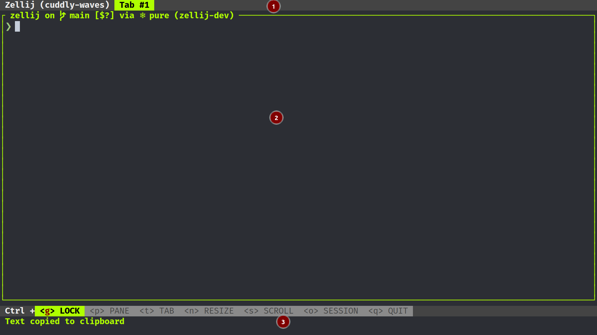
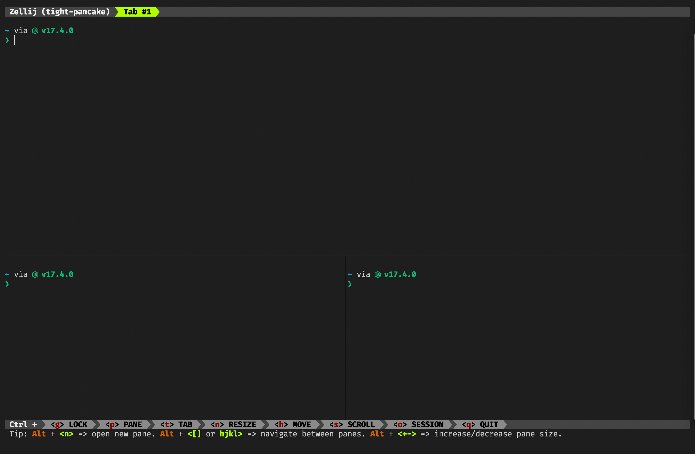
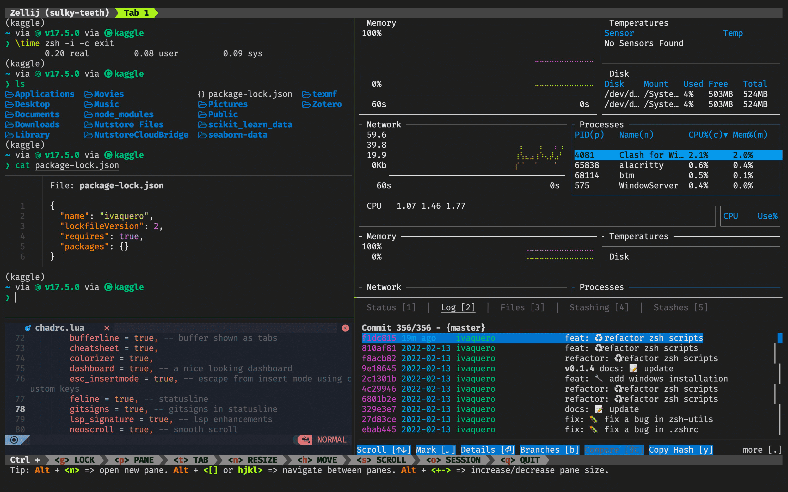

逐步搭建现代大一统终端
Contents
逐步搭建现代大一统终端#
目标：统一主流操作系统的终端配置
策略：尽量使用 Rust 编写的工具链
Rust 工具链优势
配置文件为 TOML 或 YAML，声明式配置，可读性强
多使用系统原生工具进行编译，需要下载安装的依赖少
速度上较快，有时可能不如 C 工具链，但比其他语言的工具往往要快
跨平台性优于 C
1. Starship#
Starship 是由 Rust 编写的命令行主题，简单高效、容易配置（基本不用配置），而且跨平台。
macOS/Linux 用户使用 Homebrew
打开 ~/.zshrc，添加：
eval "$(starship init zsh)"
Windows 用户使用 Scoop
scoop install starship
打开配置文件
code $PROFILE
添加
Invoke-Expression (&starship init powershell)
2. Alacritty#
Alacritty 使用 Rust 编写，是一款极简主义风格的跨平台终端模拟器，目前可以说是全网最快。其安装包发布于各个包管理器仓库
macOS/Linux 用户使用 Homebrew
brew install alacritty
Windows 用户使用 Scoop
scoop install alacritty
2.1. 基本配置#
手动建立配置文件
macOS & Linux:
~/.config/alacritty/alacritty.ymlWindows:
%APPDATA%\alacritty\alacritty.yml
# 自动刷新
live_config_reload: true
# Tab 缩进
tabspaces: 4
# 背景透明度
window.opacity: 0.9
shell:
program: /bin/zsh
# windows
# program: c:\windows\system32\windowspowershell\v1.0\powershell.exe
args:
# login
- -l
window:
# 窗口大小
dimensions:
columns: 120
lines: 60
# 边缘空白
padding:
x: 10
y: 15
dynamic_padding: false
startup_mode: Maximized
# 窗口修饰
# - full: 有边界+标题栏
# - none: 无边界+标题栏
decorations: none
scrolling:
# 历史保留行数
history: 2000
# 每次滚动行数
multiplier: 20
# 每次滚动行数（分屏时）
faux_multiplier: 100
# 自动滚动至最新行
auto_scroll: true
2.2. 字体#
这里推荐 FiraCode，当然，目前 Alacritty 还不支持连字。
macOS/Linux 用户使用 Homebrew
brew tap homebrew/cask-fonts
brew install font-fira-code-nerd-font
Windows 用户使用 Scoop
scoop bucket add nerd-fonts
scoop install firacode-nf
font:
size: 16
# 字体
normal:
family: 'FiraCode Nerd Font'
style: Regular
bold:
family: 'FiraCode Nerd Font'
style: Bold
italic:
family: 'FiraCode Nerd Font'
style: Italic
bold_{i}talic:
family: 'FiraCode Nerd Font'
style: Bold Italic
# 细描边
use_thin_strokes: true
3. Zellij#
Alacritty 不支持多窗口（需要等待下一个版本，即 0.11.0）或多标签（未来也不会），所以需要开启终端复用器（multiplexer）来配合。
由于 TMux 基于 C，不支持 Windows，而且开发者明确表示未来也不会支持，这里我们选用基于 Rust 的 Zellij 。
最新版本的 Zellij 已经整合了 TMux 的键位，消除了迁移的顾虑。
虽然 Zellij 目前也不支持 Windows，但 Windows 的 PR 已经提上日程。另外，Zellij 的配置也明显比 TMux 简单，也不需要记忆那么多快捷键。
需要强调的是，Alacritty 目前已经可以将 command / ctrl + C 复制的内容直接传给系统剪切板，不必再为终端复用器的 copy 模式烦心了，但其他终端模拟器或多或少都还有点问题。
macOS/Linux 用户使用 Homebrew
brew install zellij
基本配置文件位于 ~/.config/zellij/config.yaml
default_shell: zsh
on_force_close: detach
simplified_ui: false # 简单 UI（不包含提示字体）
pane_frames: false # pane 之间的边框
theme: default
default_mode: normal # 启动时的模式，locked 可选
mouse_mode: true # 鼠标模式（选取）
scroll_buffer_size: 10000 # 缓冲大小
Zellij 支持自定义启动布局，将布局文件存在 ~/.config/zellij/layouts 下，使用如下命令启动即可
zellij --layout [layout-name]

---
template:
direction: Horizontal # 排布方向
parts:
- direction: Vertical # part 1，垂直分割
borderless: true # 边框
split_size:
Fixed: 1
run:
plugin:
location: 'zellij:tab-bar' # 加载标签栏
- direction: Vertical # part 2
body: true # 加载主体
- direction: Vertical # part 3
borderless: true
split_size:
Fixed: 2
run:
plugin:
location: 'zellij:status-bar' # 加载状态栏
tabs: # 每个标签 pane 的排布
- name: 'Tab 1' # 每个标签的名字
direction: Horizontal # 水平排布
parts:
- direction: Vertical # 垂直分割
split_size:
Percent: 60 # 上半部分占比
- direction: Vertical
parts:
- direction: Horizontal # 水平分割
- direction: Horizontal

其他配置说明，参见官网 zellij
3.1. 整合 Alacritty#
在 alacritty.yml 中，加入
shell:
program: /bin/zsh
args:
# login
- -l
- -c
- 'zellij attach --index 0 --create'
3.2. 键位绑定#
在 zellij/config.yaml 中，加入
keybinds:
resize:
- action: [Resize: Left]
key: [Char: 'h', Alt: 'h']
- action: [Resize: Right]
key: [Char: 'l', Alt: 'l']
- action: [Resize: Down]
key: [Char: 'j', Alt: 'j']
- action: [Resize: Up]
key: [Char: 'k', Alt: 'k']
4. 命令行替代#
Rust 规避了 C++ 项目的弊病，同时保证了良好的跨平台性质，被广泛用于命令行工具的重写。
[x] 使用
bat替换cat[x] 使用
bottom替换top和htop[x] 使用
du替换dust[x] 使用
fd替换find[x] 使用
gitui替换lazygit[x] 使用
ls --tree替换tree[x] 使用
lsd替换ls[x] 使用
ripgrep替换grep[x] 使用
sd替换sed[x] 使用
tealdeer替换tldr和man[x] 使用
zoxide替换cd和z.lua
5. 后续计划#
以下两个项目都已经实现全平台，且被用于实践
5.1. Helix Editor#
目标：取代 Vim 和 NeoVim
优势
已实现全平台，配置远比 Vim 方便
内置 LSP，响应速度快
借鉴了 Vim 的键位，迁移成本低
劣势：
功能不够全面
尚未形成生态
macOS / Linux 用户
brew install helix-editor/helix
Windows 用户
scoop install helix
5.2. NuShell#
目标：取代 PowerShell 和 ZSh
优势
借鉴了 SQL，方便数据化管理
目前仅有的全平台，高性能 Shell
劣势
扩展性弱，且配置和扩展使用是一套新的 Shell 语言
macOS / Linux 用户
brew install nushell
Windows 用户
scoop install nu
6. 个人项目#
